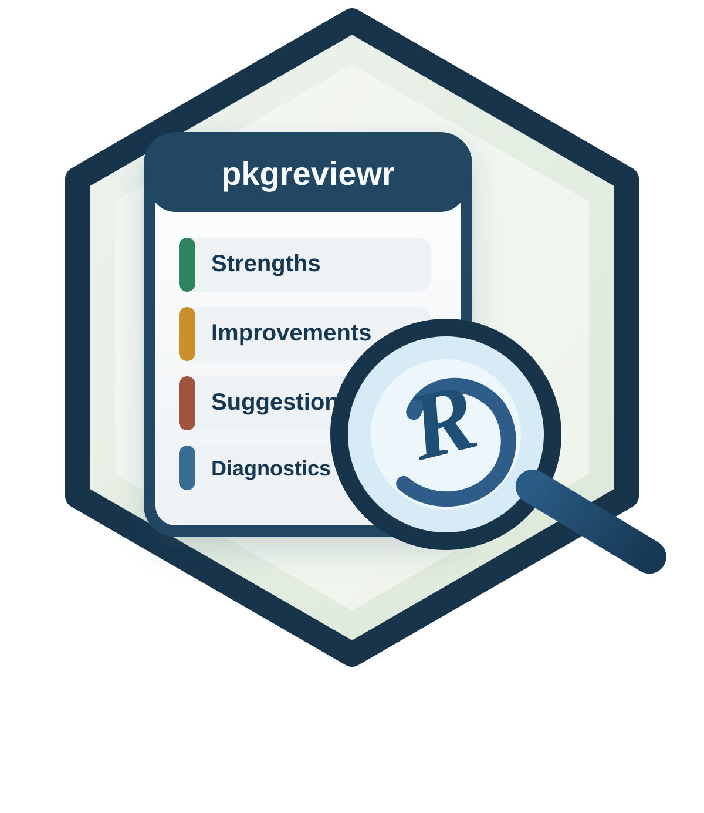

pkgreviewr reviews R packages with a section-based workflow. It gathers deterministic QA signals locally, builds targeted context for each review section, asks an LLM for concise section outputs, synthesizes an overall diagnostic from section summaries, and can persist intermediate artifacts for debugging.
The current stable user-facing entry points are:
-
collect_review_data()for deterministic signal collection -
build_report()for end-to-end report generation
Project website: https://alekoure.github.io/pkgreviewr/
Installation
pak::pak("AleKoure/pkgreviewr")Quick Start
Use a custom backend function when you want to manage provider integration yourself:
library(pkgreviewr)
my_chat_fn <- function(system_prompt, user_prompt) {
stop("Connect your preferred chat backend here")
}
build_report(
"https://github.com/dvdscripter/ini",
chat_fn = my_chat_fn
)Use an ellmer chat object when you want a ready-made provider client. The ellmer reference for constructing chat objects is at https://ellmer.tidyverse.org.
library(ellmer)
library(pkgreviewr)
chat <- chat_openai(model = "gpt-4.1-mini")
build_report(
"https://github.com/dvdscripter/ini",
chat = chat
)Use a local Ollama backend by setting a model name before calling build_report():
What build_report() Does
build_report() currently:
- clones the target package repository
- installs dependencies into an isolated library path
- runs local QA collection in a subprocess
- generates review sections independently
- stores a concise summary for each section
- synthesizes an overall assessment from section summaries
- optionally writes prompts, traces, and reports to
artifact_dir
The returned object is a pkgreviewr_report character vector with attributes for draft output, section results, traces, provenance, and persisted artifact location.
Collecting Data Only
Inspect deterministic evidence without generating a report:
library(pkgreviewr)
review_data <- collect_review_data("https://github.com/dvdscripter/ini")Collected signals currently include:
-
devtools::check()output -
lintr::lint_package()output -
covr::package_coverage()output - extracted package code from
rdocdump - recorded session information
Advanced Usage
For advanced backend setup, parallel section generation, and artifact persistence, see the vignette:
vignette("advanced-usage", package = "pkgreviewr")An example generated report is available at test_review.md.